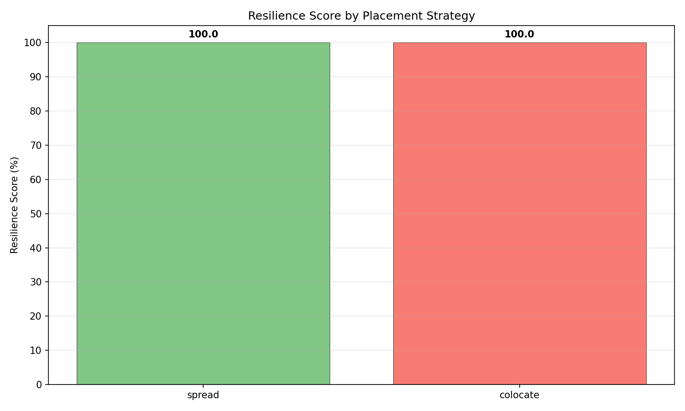
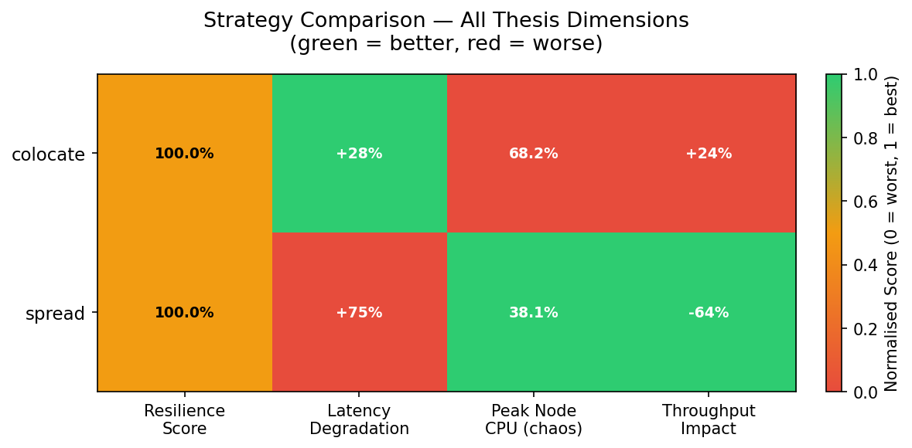
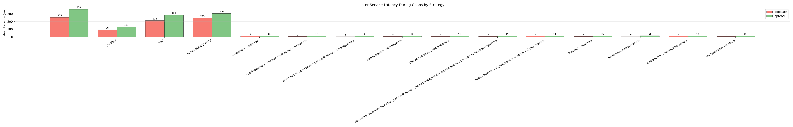
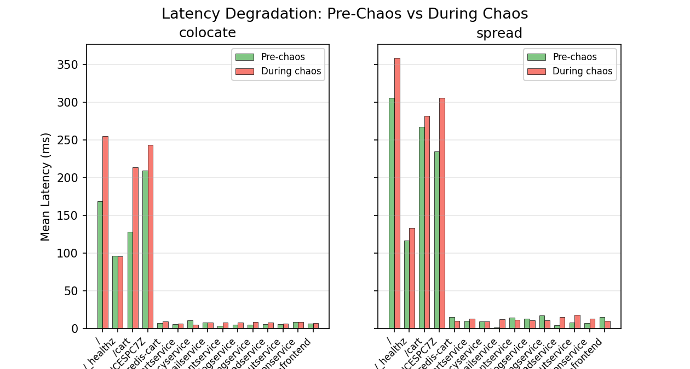
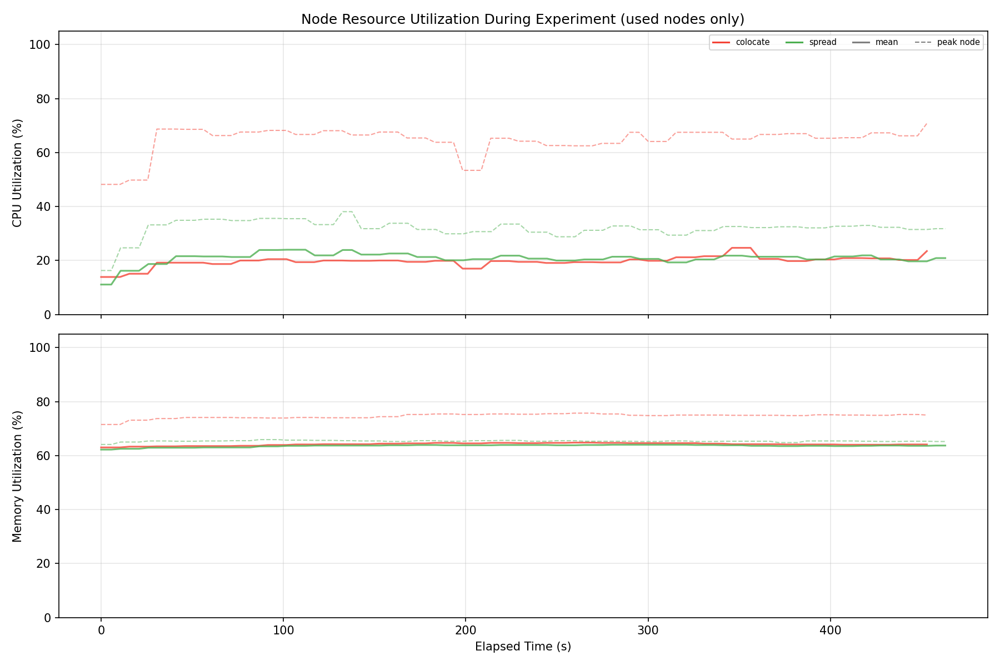
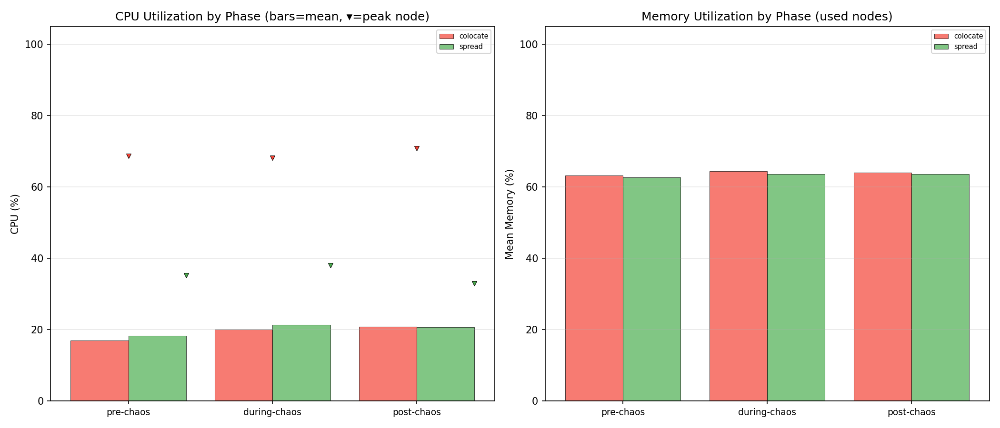
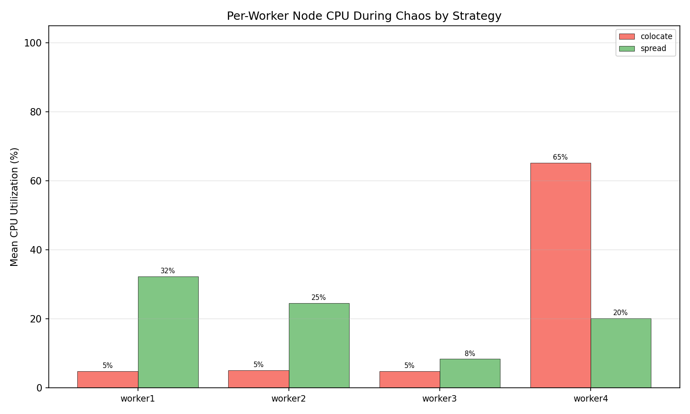
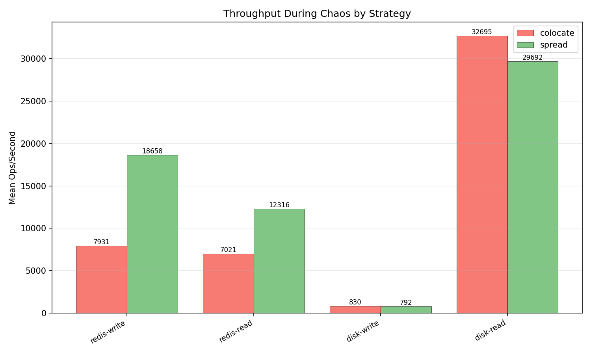
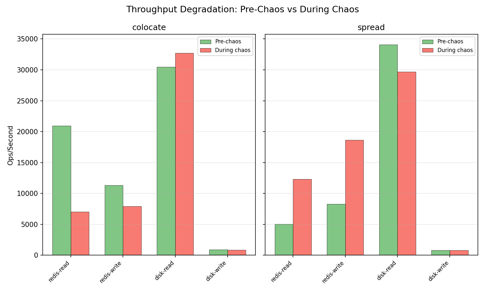
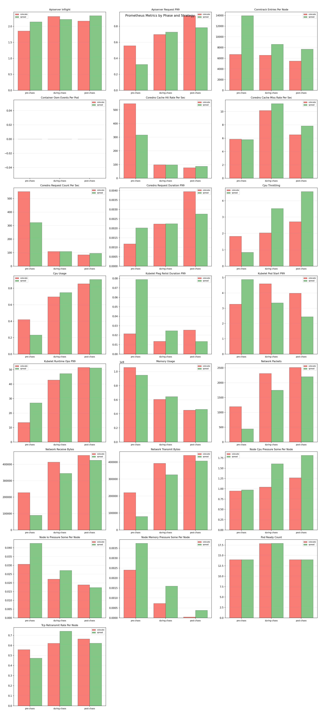

| Strategy | Runs | Resilience Score | Std Dev | Range | Pass Rate | Mean Recovery (ms) | Median Recovery (ms) | P95 Recovery (ms) |
|---|---|---|---|---|---|---|---|---|
| colocate | 1 | 100.0 | ±0.0 | 100–100 | 100% | n/a | n/a | n/a |
| spread | 1 | 100.0 | ±0.0 | 100–100 | 100% | n/a | n/a | n/a |
Note: Resilience scores blend LitmusChaos probe verdicts (25%) with continuous metrics: recovery speed (25%), latency preservation (25%), error rate (15%), and throughput preservation (10%). This produces finer-grained differentiation than probe verdicts alone.


Pod-to-node assignments per strategy. Color groups pods on the same node.
| Deployment | colocate | spread |
|---|---|---|
| adservice | worker4 | worker1 |
| cartservice | worker4 | worker2 |
| checkoutservice | worker4 | worker3 |
| currencyservice | worker4 | worker4 |
| emailservice | worker4 | worker1 |
| frontend | worker4 | worker2 |
| paymentservice | worker4 | worker3 |
| productcatalogservice | worker4 | worker4 |
| recommendationservice | worker4 | worker1 |
| redis-cart | worker4 | worker2 |
| shippingservice | worker4 | worker3 |
Time from pod deletion to pod ready, measured via the Kubernetes Watch API. Lower recovery time indicates better fault tolerance under the given placement.
HTTP route latency measured via kubectl exec using python3/wget probes.
Degradation from pre-chaos to during-chaos quantifies fault impact on service communication.
| Strategy | Route | Pre-Chaos Mean (ms) | During Chaos Mean (ms) | During Chaos P95 (ms) | During Chaos Cross-Pod Stddev (ms) | Worst Vantage Point (ms) | Post-Chaos Mean (ms) | Errors During Chaos |
|---|---|---|---|---|---|---|---|---|
| colocate | / | 168.5 | 254.9 +51% | 678.9 | 105.9 | 1644.9 | 285.8 | 0 |
| colocate | /_healthz | 96.4 | 95.6 | 143.9 | 37.8 | 220.8 | 118.2 | 0 |
| colocate | /cart | 128.3 | 213.9 +67% | 461.8 | 75.1 | 957.1 | 202.5 | 0 |
| colocate | /product/OLJCESPC7Z | 209.7 | 243.2 | 602.7 | 48.1 | 805.3 | 292.0 | 0 |
| colocate | cartservice->redis-cart | 6.9 | 9.3 | 37.2 | 9.4 | 76.1 | 13.2 | 0 |
| colocate | checkoutservice->cartservice,frontend->cartservice | 5.3 | 6.6 | 34.1 | 5.7 | 83.3 | 11.1 | 0 |
| colocate | checkoutservice->currencyservice,frontend->currencyservice | 10.9 | 5.1 | 24.6 | 4.7 | 67.6 | 4.2 | 0 |
| colocate | checkoutservice->emailservice | 7.6 | 8.0 | 34.4 | 8.6 | 80.0 | 10.4 | 0 |
| colocate | checkoutservice->paymentservice | 3.7 | 7.6 +105% | 34.1 | 8.2 | 83.5 | 3.7 | 0 |
| colocate | checkoutservice->productcatalogservice,frontend->productcatalogservice,recommendationservice->productcatalogservice | 5.1 | 7.8 +53% | 34.0 | 7.6 | 82.0 | 10.4 | 0 |
| colocate | checkoutservice->shippingservice,frontend->shippingservice | 5.1 | 8.4 +65% | 33.4 | 8.1 | 75.7 | 10.2 | 0 |
| colocate | frontend->adservice | 6.0 | 8.0 | 39.3 | 8.6 | 84.5 | 5.4 | 0 |
| colocate | frontend->checkoutservice | 5.4 | 6.3 | 33.9 | 6.2 | 84.8 | 7.5 | 0 |
| colocate | frontend->recommendationservice | 8.9 | 8.2 | 33.7 | 8.3 | 77.6 | 14.9 | 0 |
| colocate | loadgenerator->frontend | 6.5 | 7.2 | 38.6 | 7.3 | 79.9 | 11.5 | 0 |
| spread | / | 305.9 | 358.9 | 633.2 | 89.1 | 963.3 | 293.9 | 0 |
| spread | /_healthz | 116.6 | 133.1 | 190.1 | 38.8 | 283.6 | 111.4 | 0 |
| spread | /cart | 267.8 | 282.3 | 480.5 | 69.4 | 1003.8 | 290.6 | 0 |
| spread | /product/OLJCESPC7Z | 235.1 | 306.0 | 506.8 | 59.6 | 1198.9 | 263.4 | 0 |
| spread | cartservice->redis-cart | 14.8 | 10.0 | 44.3 | 11.3 | 91.0 | 15.3 | 0 |
| spread | checkoutservice->cartservice,frontend->cartservice | 9.7 | 12.7 | 44.5 | 15.8 | 89.0 | 8.5 | 0 |
| spread | checkoutservice->currencyservice,frontend->currencyservice | 9.1 | 9.4 | 47.4 | 7.7 | 94.2 | 5.3 | 0 |
| spread | checkoutservice->emailservice | 1.5 | 12.2 +710% | 43.4 | 15.5 | 88.6 | 11.5 | 0 |
| spread | checkoutservice->paymentservice | 14.3 | 11.4 | 43.8 | 12.3 | 87.0 | 20.0 | 0 |
| spread | checkoutservice->productcatalogservice,frontend->productcatalogservice,recommendationservice->productcatalogservice | 12.7 | 11.0 | 42.3 | 11.3 | 86.3 | 27.5 | 0 |
| spread | checkoutservice->shippingservice,frontend->shippingservice | 17.1 | 10.8 | 41.4 | 9.5 | 95.5 | 9.1 | 0 |
| spread | frontend->adservice | 4.5 | 15.2 +242% | 44.9 | 18.1 | 89.1 | 11.1 | 0 |
| spread | frontend->checkoutservice | 7.8 | 17.9 +129% | 47.8 | 17.9 | 88.9 | 15.0 | 0 |
| spread | frontend->recommendationservice | 7.2 | 13.1 +82% | 43.3 | 14.4 | 92.1 | 7.7 | 0 |
| spread | loadgenerator->frontend | 15.2 | 9.6 | 43.8 | 10.3 | 92.6 | 12.9 | 0 |


Node-level CPU and memory utilization from the Kubernetes Metrics API. Only nodes hosting namespace pods are included — idle nodes are excluded so placement strategies produce distinct resource profiles. Higher utilization during chaos correlates with resource contention from co-location.
| Strategy | Phase | Mean CPU (%) | CPU Stddev (%) | Peak Node CPU (%) | Mean Memory (%) | Mem Stddev (%) | Peak Node Mem (%) | Samples |
|---|---|---|---|---|---|---|---|---|
| colocate (4 used) | pre-chaos | 17.0 | 2.4 | 68.7 | 63.3 | 0.2 | 74.1 | 13 |
| colocate (4 used) | during-chaos | 20.0 | 1.4 | 68.2 | 64.4 | 0.3 | 75.7 | 66 |
| colocate (4 used) | post-chaos | 20.9 | 0.9 | 70.8 | 64.0 | 0.1 | 75.2 | 11 |
| spread (4 used) | pre-chaos | 18.3 | 3.7 | 35.3 | 62.7 | 0.3 | 65.4 | 14 |
| spread (4 used) | during-chaos | 21.4 | 1.2 | 38.1 | 63.7 | 0.2 | 65.9 | 66 |
| spread (4 used) | post-chaos | 20.7 | 0.8 | 33.0 | 63.6 | 0.1 | 65.4 | 12 |
Note: Metrics are computed only for nodes that host at least one namespace pod. Idle nodes are excluded so placement strategies (colocate vs spread) produce visibly different resource profiles.
| Strategy | Worker Node | Mean CPU (%) | Max CPU (%) | Mean Memory (%) |
|---|---|---|---|---|
| colocate | worker1 | 4.9 | 10.1 | 60.8 |
| colocate | worker2 | 5.1 | 12.2 | 61.1 |
| colocate | worker3 | 4.9 | 11.4 | 60.7 |
| colocate | worker4 | 65.3 | 68.2 | 74.8 |
| spread | worker1 | 32.3 | 38.1 | 65.4 |
| spread | worker2 | 24.6 | 27.8 | 64.2 |
| spread | worker3 | 8.4 | 12.6 | 61.9 |
| spread | worker4 | 20.2 | 25.0 | 63.5 |
Key insight: Under colocate, one worker absorbs all application CPU while others remain idle. The cluster-wide mean hides this hot-node effect. Under spread, load distributes more evenly across workers.



Redis ops/s and sequential disk read/write bandwidth measured via
redis-cli and dd. Throughput degradation during chaos
reflects shared I/O contention on co-located nodes.
| Strategy | Operation | Pre-Chaos Ops/s | During Chaos Ops/s | During Chaos Latency (ms) | During Chaos Bandwidth | During Chaos Cross-Node Stddev (ops/s) | Worst Node Min (ops/s) | Post-Chaos Ops/s |
|---|---|---|---|---|---|---|---|---|
| colocate | redis-read | 20926.7 | 7020.9 -66% | 3.28 | n/a | n/a | n/a | 3314.0 |
| colocate | redis-write | 11321.0 | 7930.6 | 2.85 | n/a | n/a | n/a | 5016.3 |
| colocate | disk-read | 30491.5 | 32694.7 | 0.04 | 2043.4 MB/s | 0.0 | 6433.3 | 19725.0 |
| colocate | disk-write | 881.3 | 829.8 | 1.24 | 51.9 MB/s | 0.0 | 517.8 | 681.3 |
| spread | redis-read | 5022.2 | 12315.8 | 1.07 | n/a | n/a | n/a | 17401.3 |
| spread | redis-write | 8303.0 | 18657.6 | 1.27 | n/a | n/a | n/a | 14897.0 |
| spread | disk-read | 34075.9 | 29691.7 | 0.08 | 1855.7 MB/s | 0.0 | 1016.2 | 32563.8 |
| spread | disk-write | 798.7 | 792.3 | 1.35 | 49.5 MB/s | 0.0 | 374.6 | 746.1 |


Pod readiness, CPU throttling, memory working set, and network receive bytes collected via PromQL. These metrics supplement the primary four dimensions.
| Strategy | Metric | Phase | Mean | Max | Samples |
|---|---|---|---|---|---|
| colocate | apiserver_inflight | pre-chaos | 1.8571 | 3.0000 | 7 |
| colocate | apiserver_inflight | during-chaos | 2.3125 | 4.0000 | 32 |
| colocate | apiserver_inflight | post-chaos | 2.1667 | 3.0000 | 6 |
| colocate | apiserver_request_p99 | pre-chaos | 0.5580 | 0.5617 | 7 |
| colocate | apiserver_request_p99 | during-chaos | 0.6983 | 0.8503 | 32 |
| colocate | apiserver_request_p99 | post-chaos | 0.9320 | 0.9768 | 6 |
| colocate | conntrack_entries_per_node | pre-chaos | 6724.1429 | 8118.0000 | 7 |
| colocate | conntrack_entries_per_node | during-chaos | 6558.6875 | 8994.0000 | 32 |
| colocate | conntrack_entries_per_node | post-chaos | 5469.3333 | 5880.0000 | 6 |
| colocate | container_oom_events_per_pod | pre-chaos | 0.0000 | 0.0000 | 7 |
| colocate | container_oom_events_per_pod | during-chaos | 0.0000 | 0.0000 | 32 |
| colocate | container_oom_events_per_pod | post-chaos | 0.0000 | 0.0000 | 6 |
| colocate | coredns_cache_hit_rate_per_sec | pre-chaos | 545.4063 | 806.6222 | 7 |
| colocate | coredns_cache_hit_rate_per_sec | during-chaos | 99.0382 | 116.3111 | 32 |
| colocate | coredns_cache_hit_rate_per_sec | post-chaos | 77.5852 | 78.5556 | 6 |
| colocate | coredns_cache_miss_rate_per_sec | pre-chaos | 5.8635 | 6.7999 | 7 |
| colocate | coredns_cache_miss_rate_per_sec | during-chaos | 10.1583 | 12.1555 | 32 |
| colocate | coredns_cache_miss_rate_per_sec | post-chaos | 6.5204 | 7.6222 | 6 |
| colocate | coredns_request_count_per_sec | pre-chaos | 551.2698 | 812.5111 | 7 |
| colocate | coredns_request_count_per_sec | during-chaos | 109.1174 | 127.9111 | 32 |
| colocate | coredns_request_count_per_sec | post-chaos | 84.0666 | 86.1778 | 6 |
| colocate | coredns_request_duration_p99 | pre-chaos | 0.0012 | 0.0012 | 7 |
| colocate | coredns_request_duration_p99 | during-chaos | 0.0022 | 0.0037 | 32 |
| colocate | coredns_request_duration_p99 | post-chaos | 0.0039 | 0.0042 | 6 |
| colocate | cpu_throttling | pre-chaos | 1.8274 | 2.0837 | 7 |
| colocate | cpu_throttling | during-chaos | 2.0378 | 2.7390 | 32 |
| colocate | cpu_throttling | post-chaos | 2.7190 | 2.7957 | 6 |
| colocate | cpu_usage | pre-chaos | 0.4202 | 0.4392 | 7 |
| colocate | cpu_usage | during-chaos | 0.6969 | 0.8883 | 32 |
| colocate | cpu_usage | post-chaos | 0.8544 | 0.8678 | 6 |
| colocate | kubelet_pleg_relist_duration_p99 | pre-chaos | 0.0216 | 0.0219 | 7 |
| colocate | kubelet_pleg_relist_duration_p99 | during-chaos | 0.0135 | 0.0206 | 32 |
| colocate | kubelet_pleg_relist_duration_p99 | post-chaos | 0.0254 | 0.0640 | 6 |
| colocate | kubelet_pod_start_p99 | pre-chaos | 3.2714 | 3.3000 | 7 |
| colocate | kubelet_pod_start_p99 | during-chaos | 4.6082 | 4.8333 | 32 |
| colocate | kubelet_pod_start_p99 | post-chaos | 3.9817 | 4.7750 | 6 |
| colocate | kubelet_runtime_ops_p99 | pre-chaos | 13.4898 | 14.0102 | 7 |
| colocate | kubelet_runtime_ops_p99 | during-chaos | 42.9085 | 52.0425 | 32 |
| colocate | kubelet_runtime_ops_p99 | post-chaos | 51.5386 | 51.5684 | 6 |
| colocate | memory_usage | pre-chaos | 1058467840.0000 | 1072160768.0000 | 7 |
| colocate | memory_usage | during-chaos | 606476544.0000 | 1087758336.0000 | 32 |
| colocate | memory_usage | post-chaos | 452251648.0000 | 457613312.0000 | 6 |
| colocate | network_packets | pre-chaos | 1196.9336 | 1292.4311 | 7 |
| colocate | network_packets | during-chaos | 2309.9735 | 2983.3652 | 32 |
| colocate | network_packets | post-chaos | 2512.9222 | 2611.3790 | 6 |
| colocate | network_receive_bytes | pre-chaos | 227673.9750 | 246265.3885 | 7 |
| colocate | network_receive_bytes | during-chaos | 413179.7994 | 536050.1603 | 32 |
| colocate | network_receive_bytes | post-chaos | 454380.9885 | 468134.3204 | 6 |
| colocate | network_transmit_bytes | pre-chaos | 220082.6940 | 235500.3973 | 7 |
| colocate | network_transmit_bytes | during-chaos | 392874.1034 | 510568.8520 | 32 |
| colocate | network_transmit_bytes | post-chaos | 439308.5782 | 451823.0014 | 6 |
| colocate | node_cpu_pressure_some_per_node | pre-chaos | 0.9490 | 1.0201 | 7 |
| colocate | node_cpu_pressure_some_per_node | during-chaos | 1.0441 | 1.2500 | 32 |
| colocate | node_cpu_pressure_some_per_node | post-chaos | 1.2688 | 1.2912 | 6 |
| colocate | node_io_pressure_some_per_node | pre-chaos | 0.0307 | 0.0312 | 7 |
| colocate | node_io_pressure_some_per_node | during-chaos | 0.0221 | 0.0317 | 32 |
| colocate | node_io_pressure_some_per_node | post-chaos | 0.0189 | 0.0237 | 6 |
| colocate | node_memory_pressure_some_per_node | pre-chaos | 0.0024 | 0.0024 | 7 |
| colocate | node_memory_pressure_some_per_node | during-chaos | 0.0007 | 0.0024 | 32 |
| colocate | node_memory_pressure_some_per_node | post-chaos | 0.0000 | 0.0001 | 6 |
| colocate | pod_ready_count | pre-chaos | 14.0000 | 14.0000 | 7 |
| colocate | pod_ready_count | during-chaos | 17.8750 | 21.0000 | 32 |
| colocate | pod_ready_count | post-chaos | 14.0000 | 14.0000 | 6 |
| colocate | tcp_retransmit_rate_per_node | pre-chaos | 0.5587 | 0.9111 | 7 |
| colocate | tcp_retransmit_rate_per_node | during-chaos | 0.6208 | 1.0444 | 32 |
| colocate | tcp_retransmit_rate_per_node | post-chaos | 0.6643 | 0.8111 | 6 |
| spread | apiserver_inflight | pre-chaos | 2.1429 | 4.0000 | 7 |
| spread | apiserver_inflight | during-chaos | 2.2188 | 5.0000 | 32 |
| spread | apiserver_inflight | post-chaos | 2.3333 | 4.0000 | 6 |
| spread | apiserver_request_p99 | pre-chaos | 0.3228 | 0.4870 | 7 |
| spread | apiserver_request_p99 | during-chaos | 0.7275 | 0.7983 | 32 |
| spread | apiserver_request_p99 | post-chaos | 0.7837 | 0.7919 | 6 |
| spread | conntrack_entries_per_node | pre-chaos | 13945.5714 | 16572.0000 | 7 |
| spread | conntrack_entries_per_node | during-chaos | 8614.0000 | 12465.0000 | 32 |
| spread | conntrack_entries_per_node | post-chaos | 7688.1667 | 8767.0000 | 6 |
| spread | container_oom_events_per_pod | pre-chaos | 0.0000 | 0.0000 | 7 |
| spread | container_oom_events_per_pod | during-chaos | 0.0000 | 0.0000 | 32 |
| spread | container_oom_events_per_pod | post-chaos | 0.0000 | 0.0000 | 6 |
| spread | coredns_cache_hit_rate_per_sec | pre-chaos | 316.6222 | 507.3333 | 7 |
| spread | coredns_cache_hit_rate_per_sec | during-chaos | 97.6264 | 110.7778 | 32 |
| spread | coredns_cache_hit_rate_per_sec | post-chaos | 87.6704 | 89.5333 | 6 |
| spread | coredns_cache_miss_rate_per_sec | pre-chaos | 5.7936 | 6.9777 | 7 |
| spread | coredns_cache_miss_rate_per_sec | during-chaos | 11.1826 | 13.7113 | 32 |
| spread | coredns_cache_miss_rate_per_sec | post-chaos | 7.8519 | 8.2890 | 6 |
| spread | coredns_request_count_per_sec | pre-chaos | 322.4159 | 513.4889 | 7 |
| spread | coredns_request_count_per_sec | during-chaos | 108.8097 | 123.8444 | 32 |
| spread | coredns_request_count_per_sec | post-chaos | 95.5223 | 97.8223 | 6 |
| spread | coredns_request_duration_p99 | pre-chaos | 0.0020 | 0.0038 | 7 |
| spread | coredns_request_duration_p99 | during-chaos | 0.0022 | 0.0029 | 32 |
| spread | coredns_request_duration_p99 | post-chaos | 0.0028 | 0.0028 | 6 |
| spread | cpu_throttling | pre-chaos | 0.8479 | 1.3353 | 7 |
| spread | cpu_throttling | during-chaos | 3.5272 | 4.6835 | 32 |
| spread | cpu_throttling | post-chaos | 4.5604 | 4.6305 | 6 |
| spread | cpu_usage | pre-chaos | 0.2315 | 0.3423 | 7 |
| spread | cpu_usage | during-chaos | 0.7477 | 0.9494 | 32 |
| spread | cpu_usage | post-chaos | 0.9064 | 0.9153 | 6 |
| spread | kubelet_pleg_relist_duration_p99 | pre-chaos | 0.0788 | 0.0910 | 7 |
| spread | kubelet_pleg_relist_duration_p99 | during-chaos | 0.0247 | 0.0635 | 32 |
| spread | kubelet_pleg_relist_duration_p99 | post-chaos | 0.0134 | 0.0149 | 6 |
| spread | kubelet_pod_start_p99 | pre-chaos | 4.8812 | 4.8812 | 7 |
| spread | kubelet_pod_start_p99 | during-chaos | 3.3547 | 4.8781 | 32 |
| spread | kubelet_pod_start_p99 | post-chaos | 2.4472 | 2.4580 | 6 |
| spread | kubelet_runtime_ops_p99 | pre-chaos | 27.0473 | 27.0799 | 7 |
| spread | kubelet_runtime_ops_p99 | during-chaos | 47.3448 | 54.9693 | 32 |
| spread | kubelet_runtime_ops_p99 | post-chaos | 51.2839 | 51.3398 | 6 |
| spread | memory_usage | pre-chaos | 949532379.4286 | 986038272.0000 | 7 |
| spread | memory_usage | during-chaos | 644325632.0000 | 1027059712.0000 | 32 |
| spread | memory_usage | post-chaos | 464580608.0000 | 469471232.0000 | 6 |
| spread | network_packets | pre-chaos | 444.2081 | 659.5267 | 7 |
| spread | network_packets | during-chaos | 1746.9229 | 2247.0144 | 32 |
| spread | network_packets | post-chaos | 2203.3384 | 2224.9616 | 6 |
| spread | network_receive_bytes | pre-chaos | 89554.8415 | 129069.8865 | 7 |
| spread | network_receive_bytes | during-chaos | 345132.6285 | 449941.3126 | 32 |
| spread | network_receive_bytes | post-chaos | 424900.9626 | 432624.0499 | 6 |
| spread | network_transmit_bytes | pre-chaos | 79655.8339 | 118141.0845 | 7 |
| spread | network_transmit_bytes | during-chaos | 325395.0050 | 421855.0711 | 32 |
| spread | network_transmit_bytes | post-chaos | 406616.0185 | 415500.7661 | 6 |
| spread | node_cpu_pressure_some_per_node | pre-chaos | 0.9734 | 1.1331 | 7 |
| spread | node_cpu_pressure_some_per_node | during-chaos | 1.6089 | 1.8370 | 32 |
| spread | node_cpu_pressure_some_per_node | post-chaos | 1.8118 | 1.8182 | 6 |
| spread | node_io_pressure_some_per_node | pre-chaos | 0.0425 | 0.0427 | 7 |
| spread | node_io_pressure_some_per_node | during-chaos | 0.0271 | 0.0451 | 32 |
| spread | node_io_pressure_some_per_node | post-chaos | 0.0173 | 0.0179 | 6 |
| spread | node_memory_pressure_some_per_node | pre-chaos | 0.0037 | 0.0038 | 7 |
| spread | node_memory_pressure_some_per_node | during-chaos | 0.0016 | 0.0038 | 32 |
| spread | node_memory_pressure_some_per_node | post-chaos | 0.0004 | 0.0004 | 6 |
| spread | pod_ready_count | pre-chaos | 14.0000 | 14.0000 | 7 |
| spread | pod_ready_count | during-chaos | 17.9062 | 21.0000 | 32 |
| spread | pod_ready_count | post-chaos | 14.0000 | 14.0000 | 6 |
| spread | tcp_retransmit_rate_per_node | pre-chaos | 0.4730 | 0.7111 | 7 |
| spread | tcp_retransmit_rate_per_node | during-chaos | 0.7403 | 1.1333 | 32 |
| spread | tcp_retransmit_rate_per_node | post-chaos | 0.6222 | 0.8889 | 6 |

This appendix documents how each metric in this report is calculated. All formulas reference the actual implementation in the ChaosProbe source code.
Every continuous prober classifies each sample into one of three phases based on chaos lifecycle timestamps:
mark_chaos_start() is calledmark_chaos_end() is calledIf the chaos engine does not report an end time, a safety cap prevents the during-chaos window from growing indefinitely:
This dynamic buffer scales with experiment duration while remaining bounded, giving enough time to capture immediate post-fault recovery behaviour in the during-chaos window.
The resilience score (0–100) is derived from LitmusChaos probe verdicts.
Each experiment has a probeSuccessPercentage (the fraction of
probes that passed). The final score is a weighted average across all experiments:
By default all experiments have equal weight (w=1). The report note describes how continuous metrics (recovery speed, latency, error rate, throughput) contribute to differentiation beyond probe verdicts alone.
Measured via the Kubernetes Watch API by observing real-time pod lifecycle events. A recovery cycle is defined as:
Each cycle records three durations:
deletionToScheduled_ms — time from deletion event to the replacement pod being scheduledscheduledToReady_ms — time from scheduling to the pod reaching Ready statustotalRecovery_ms — end-to-end: deletion to ReadySummary statistics across all cycles in a run:
P95 is computed as sorted_values[floor(n × 0.95)].
Latency is measured by executing HTTP requests from inside the cluster via
kubectl exec, using python3 (preferred) or wget as a fallback.
Each target pod is probed independently as a separate vantage point.
Per-route summary (computed over successful samples only):
Error rate:
Cross-pod standard deviation (placement signal):
A higher cross-pod stddev indicates that different pods experienced different latencies, which is a signal of placement-dependent behaviour (e.g., one pod shares a node with the fault target while another does not).
Worst vantage point:
Node-level CPU and memory metrics are fetched from the Kubernetes Metrics API
(metrics.k8s.io/v1beta1) every sampling interval.
Used-nodes-only filtering: only nodes hosting at least one running pod in the target namespace are included. This prevents idle nodes from diluting placement-specific signals. For example, colocate concentrates all pods on a single node — averaging CPU across 3 cluster nodes would show ~30% instead of the actual ~80% on that node.
Per-tick aggregate (across used nodes):
Phase summary:
The same pattern applies to memory metrics. Standard deviation across ticks indicates variability; peak shows the worst-case node pressure observed.
Two I/O subsystems are probed independently:
Redis throughput (via redis-benchmark):
redis-benchmark -q)-q output (else 1000 / ops_per_sec)
Default concurrency saturates the server so node-level CPU contention shows up as a throughput drop. Operations measured: SET and GET.
Disk throughput (via dd):
Sequential I/O with configurable block size. Operations measured: write and read.
Cross-node aggregation (placement signal):
Higher cross-node stddev indicates uneven I/O performance across nodes, which correlates with placement-induced resource contention.